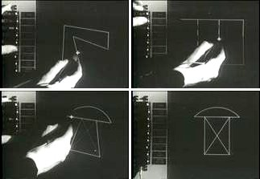
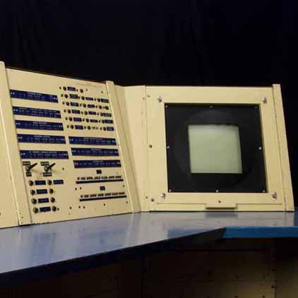
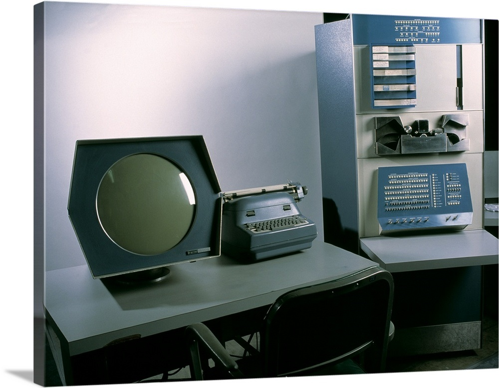
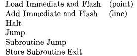
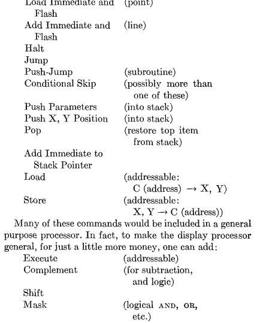

Created: 2019-05-02 Thu 12:28
This paper was written by T.H Myer and I.E Sutherland with inputs from Bolt Beranek and Newman Inc.

This paper talks about the flexibility and power needed in the data channel for computer display, it also looks at the design of the display processor (control part of the display) and how it was found that making successive improvements to design of display processor lie on a circular path. It also talks about the various challenges faced in associating the display with the core computer.

Figure 2: TX-0 display

Figure 3: DEC-PDP
When the authors decided to design the display processor, it got so complex and it resembled a full fledged computer with some special graphic features, and then a strange thing happened, the authors were compelled to add a second, subsidary processor, which itself began to grow in size, it continued and authors found that they were stuck in this never ending cyclic process. They called it wheel of Reincarnation.
We should realize that display data channel is not a mere data channel, but is a processor.


So, if we take a look at the design, we have built up display channel until it itself is a general purpose processor with a display. The display is tied directly to its processor, to generate a picture the display processor's central registers are used. In short, we have come exactly around once the wheel of reincarnation.
However, we have made significant developement, we have added support for many things in the process.